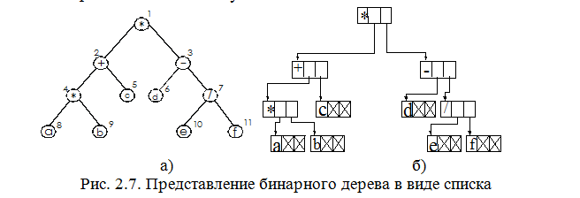

Усовершенствованный метод представления бинарного дерева поиска, содержащего n узлов, с помощью массива, размер которого равен n единицам памяти вместо 2n-1, используется в методе пирамидальной сортировки [11].
Узлы почти полного бинарного дерева могут быть пронумерованы так, что корню назначается номер 1, левому сыну - удвоенный номер его отца, а правому - удвоенный номер отца плюс единица. При такой схеме нумерации каждому узлу почти полного бинарного дерева поставлен в соответствие уникальный номер, который определяет позицию узла внутри дерева. Для представления почти полного бинарного дерева нет необходимости задавать связи между узлами дерева, так как узел с назначенным ему номером i является отцом узлов с номерами 2i и 2i+l (рис 2.4).
Движение по дереву осуществляется функциями:
intLeft(inti) {return 2*i} Переход к сыновьему узлу 2i (левое поддерево) узла i
intRight(inti) {return 2*i+1} Переход к сыновьему узлу 2i+1 (правое поддерево) узла i
intParent(inti) {return i/2} Переход к родительскому узлу узла i
Если добавить к такому представлению дерева условие: значение потомка не превосходит значения предка A[parent(i)] >=A[i] и A[parent(i)] >=A[i+1] (основное свойство кучи), то получим структуру, которая называется двоичной кучей. Эта структура используется в пирамидальной сортировке. Она позволяет эффективно организовать очередь с приоритетами. Встречаются алгоритмы, использующие сходные структуры данных (биномиальные кучи, фибоначчиевы кучи).
Таким образом, наибольший элемент дерева (или любого поддерева) находится в корневой вершине дерева (этого поддерева).
В дереве, составляющем кучу, все уровни (кроме, быть может, последнего) заполнены полностью. Поэтому высота этого дерева равна (log2 n), где п—число элементов в куче. Перечислим основные операции над кучей:
• поддержание основного свойства, время работы составляет О(log2 n);
• построение кучи из случайного массива, время работы О (n);
• сортировка массива без использования дополнительной памяти, время работы О(п log2 n);
• операции взятия наибольшего и добавления элемента используются при моделировании очереди с приоритетами на базе кучи. Время работы обеих процедур составляет О (log2 n).
Рассмотрим основные из этих процедур.
Функция сохранения основного свойства кучи (рис. 2.5). Идея проста: если основное свойство не выполнено для вершины i, то её следует поменять с большим из её детей и т. д., пока элемент A[i] не «погрузится» до нужного места.
Рис. 2.5а - начальное состояние кучи. В вершине i =2 основное свойство нарушено. Чтобы восстановить его, необходимо поменять A[2] и А[4]. После этого (рис. 2.5б) основное свойство нарушается в вершине с индексом 4. Рекурсивный вызов процедуры сохранения свойств кучи восстанавливает основное свойство в вершине с индексом 4 путём перестановки A[4] <--> А[9] (рис. 2.5в). После этого основное свойство выполнено для всех вершин.
Пример 2.1. Функция сохранения основного свойства кучи
void SaveHeap(int A[], int i, int size) //а-массив, i-номер узла
{
int l=Left(i); // Левый сын узлаi
int r=Right(i); // Правый сын узлаi
int lagest=I, temp; // size = 10
if (l<=size && A[l] > A[i])
largest=l;
if (r<=size && A [r] > A[largest])
largest=r;
if (largest !=i)
{
temp=A[i];
A[i]=A[largest];
A[largest]=temp;
SaveHeap(A, largest, size);
}
else
return
}
Работа процедуры SaveHeap показана на рис. 2.5. В переменную largestпомещается индекс наибольшего из элементов A[i], A[Left(i)] и A[Right(i)]. Если largest=i, то элемент A[i] уже «погрузился» до нужного места, и работа процедуры закончена. Иначе процедура меняет местами A[i] и A[largest], но, возможно, нарушает свойство кучи в вершине largest и рекурсивно вызывает себя для вершины largest, чтобы исправить возможные нарушения.
Построение кучи. Пусть дан массив A[1..n], который мы хотим превратить в кучу, переставив его элементы. Для этого можно использовать процедуру SaveHeap,применяя её по очереди ко всем вершинам, начиная с нижних. Поскольку вершины с номерами [n/2]+1,...,n являются листьями, поддеревья с этими вершинами удовлетворяют основному свойству. Для каждой из оставшихся вершин, в порядке убывания индексов, мы применяем процедуру SaveHeap.Порядок обработки вершин гарантирует, что каждый раз условия вызова процедуры (выполнение основного свойства для поддеревьев) будут выполнены.
Пример работы процедуры heapпоказан на рис. 2.6.
Пример2.2.Функция построения кучи.
void CreateHeap (int A[], int size)
{
int i;
for (i=size/2; I >=1;i--)
SaveHeap(A, I, size);
}
Время работы процедурыCreateHeapне превышает0(n*log2 n). Однако эту оценку можно улучшить при увеличении высоты дерева. В этом случае время работы процедуры CreateHeap составляет
